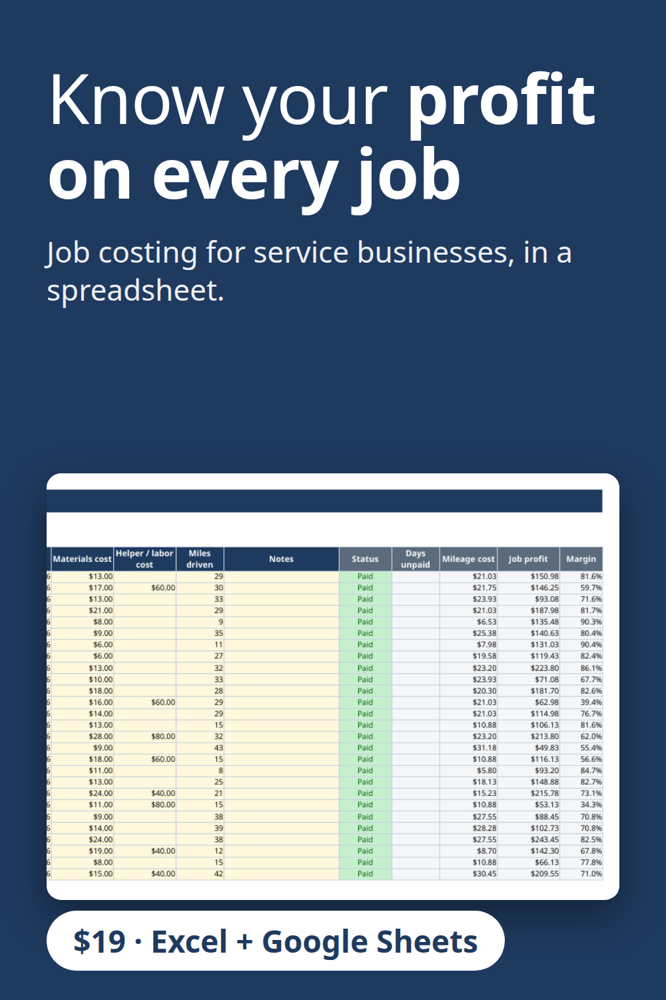

A job profit tracker for service businesses: enter the invoice, materials, helper pay and miles driven and the sheet works out job profit and margin. See which services earn the most, then price and schedule accordingly. Dashboard, reports and expense log included. Excel and Google Sheets. $19 instant download.
Get the $19 version on Gumroad
Built with the help of AI tools, then tested: every report number was recalculated separately.